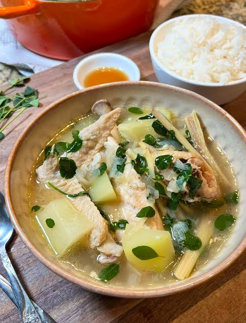

Home
Chicken Tinola

Description
Chicken tinola is a traditional Filipino ginger-infused chicken soup made with bone-in chicken, green papaya or chayote, and malunggay or chili leaves.
Ingredients
- 1 kg chicken, cut into pieces
- 1 tbsp cooking oil
- 1 medium onion, chopped
- 4 cloves garlic, minced
- 2 thumbs fresh ginger, sliced
- 3 tbsp fish sauce (patis)
- 4-5 cups water or rice wash
- 1 piece green papaya or chayote squash, cubed
- 1 cup malunggay leaves or chili leaves (dahon ng sili)
- Salt and ground black pepper to taste
Steps
- Sauté aromatics: Heat oil in a large pot over medium heat. Sauté garlic, onion, and ginger until fragrant and onions are soft.
- Brown the chicken: Add the chicken pieces and fish sauce. Cook until the outside of the chicken turns light brown and absorbs the flavors.
- Simmer the soup: Pour in the water or rice wash. Bring to a boil, then lower the heat, cover, and simmer for 20 minutes until the chicken becomes tender.
- Add vegetables: Add the green papaya or chayote pieces. Simmer for about 5 to 10 minutes until the squash is fork-tender.
- Finish with greens: Stir in the malunggay or chili leaves. Cook for 1 to 2 minutes until wilted, then season with salt and pepper to taste.
- Serve: Serve hot in bowls alongside steaming white rice.